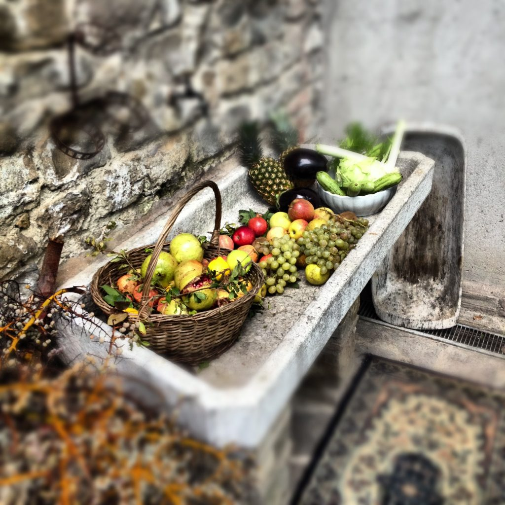

Photo by Francesca Tosolini
In Italy, if a holiday occurs on a Tuesday (martedì) or a Thursday (giovedì), Italians practice the so-called ponte (bridge), which means that they carry the holiday over to the previous Monday or following Friday respectively. However, if a national holiday falls on either a Saturday or a Sunday, they don't make up for it on the following Monday, as they do in the States; Italians just lose that day. {This is an excerpt from chapter 13 “National Holiday” of the eBook “Italy from the Inside. A native Italian reveals the secrets of traveling in Italy”. To buy our eBook click here}